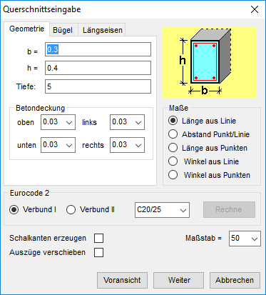
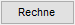

Angaben für die automatische Konstruktion und Bewehrung vordefinierter Details. Maßangaben können direkt eingegeben oder aus der Zeichnung übernommen werden.
Die Optionen auf den Registerkarten Geometrie, Bügel und Längseisen sind abhängig vom vorab gewähltem Detail-Querschnitt. Maßbezeichnungen können der detail-spezifischen Skizze im Dialog entnommen werden.
 |
Um Maßangaben aus der Zeichnung zu übernehmen
§Klicken Sie in das gewünschte Eingabefeld, (z. B. b= Breite).
§Wählen Sie unter Maße (unterhalb der Skizze) die gewünschte Methode.
 L‰nge aus Linie |
 Abstand Punkt/Linie |
 L‰nge aus Punkten |
 Winkel aus Linie |
 Winkel aus Punkten |
§Klicken Sie in der Zeichnung die entsprechenden Elemente an. Der aus der Zeichnung ermittelte Wert wird in das Eingabefeld übernommen. ISBCAD wechselt automatisch in das nächste Eingabefeld.
Hinweis: Achten Sie beim Fangen von Punkten auf die Darstellung der Fangmarke und darauf, die Anfangs- und Endpunkte von Linien zu fangen, und nicht etwa die Eckpunkte von Füllungen. Andernfalls kann das Maß nicht ermittelt werden. Siehe auch: Elementfang
|
|
Linienpunkt gefangen |
Eckpunkt der Füllung gefangen |


Angabe zur Geometrie und Betondeckung entsprechend der Skizze. |
Angaben zu den Bügeln. |
Angaben zu den Längseisen. |
Maße
Methoden zur Ermittlung und Übernahme von Maßangaben aus der Zeichnung.
|
Eurocode 2
Berechnung der Übergreifungslängen bei den Längseisen. Nur wenn sich die Eingabemarke in einer der Optionen zur Eingabe der Übergreifungslänge befindet (Registerkarte Längseisen → Übergreifungslänge). Verbund I / Verbund II Auswahl des Verbundes und der Betongüte für die in der Registerkarte Längseisen gewählten Längseisen (oben/Mitte/unten).  Berechnet die Übergreifungslänge für die aktuell gewählten Längseisen (s. Registerkarte Längseisen → Übergreifungslänge). |
Schalkante erzeugen
Wenn hier der Haken gesetzt wird, wird neben der Bewehrung auch die Geometrie gezeichnet.
Auszüge verschieben
Stahlauszüge können nach Absetzen der Zeichnung noch verschoben werden.
Maßstab =
Maßstab für die Querschnittsdarstellung. Der vorgeschlagene Wert entspricht dem Zeichnungs-Maßstab.
Wenn nur die Bewehrung gezeichnet werden soll, um sie in eine vorhandene Geometrie zu platzieren, müssen Sie den Maßstab der Geometrie einstellen.

Die Voransicht dient der Kontrolle, ob alle Eingaben stimmen. Der Dialog bleibt geöffnet.

Sie gelangen ins Zeichenprogramm und haben verschiedene Möglichkeiten, die Detailzeichnung auf dem Plan zu platzieren. Siehe: Detail in der Zeichnung platzieren.

Vorgenommene Änderungen werden verworfen und der Dialog geschlossen.